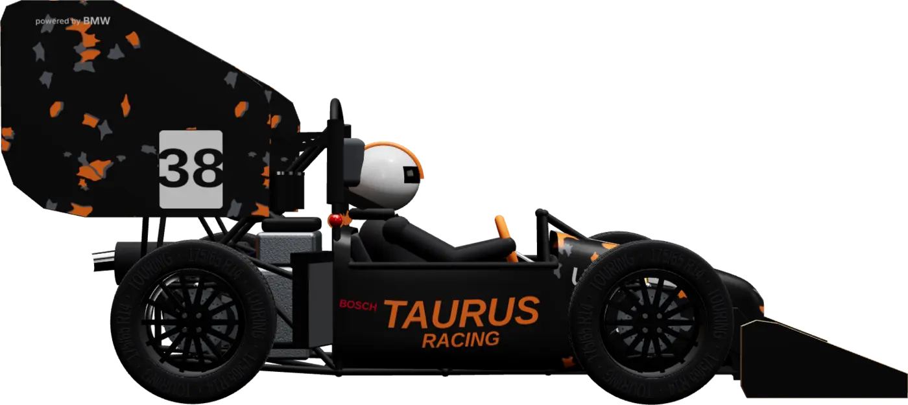

Laboratório

Mude peso, potência, pneu e asas e veja o tempo de volta mudar. São as contas que a equipe faz para decidir onde gastar cada quilo e cada real.
Simule como engenheiro
Quatro simulações: volta de autocross, aceleração em 75 metros, skidpad e geometria de suspensão. Os valores são típicos de um Fórmula SAE a combustão.
Na largada o limite é a aderência dos pneus traseiros (parte do peso vai para trás quando o carro acelera). Depois de uns 70 km/h quem manda é a potência. Por isso tirar peso ajuda nas duas fases.
O carro dá duas voltas em cada círculo do oito e só a segunda é cronometrada. Tudo depende de quanta força lateral os pneus aguentam: pneu melhor e mais downforce deixam o carro fazer a curva mais rápido.
Arraste os pontos laranja para mudar a geometria
Numa curva o carro inclina e a roda de fora sobe. Se ela ganhar cambagem negativa ao subir, o pneu fica mais apoiado no chão e segura mais. Braços paralelos e iguais não dão esse ganho. O centro de rolagem define quanto o carro inclina.